Revision History
Introduction
How Do I Create a New Form?
The report builder tool provides administrators with the ability to create, copy, edit, delete, import and export database driven reports and forms. Pre-defined reports are stored in the language directory labeled specified for the given language. After installing the plug-in, there may be several standard reports and forms installed. More reports or forms can be added by importing them from either the host servers reports directory or uploading them directly from the browser. Standard reports can be viewed and customized through the Report Viewer. Forms may only be edited through Report builder. The Report Viewer manual covers the output procedures necessary for exporting or viewing reports created with the report builder.
NOTE: DETAILED UNDERSTANDING OF THE DATABASES AND FIELDS IS REQUIRED TO USE REPORT BUILDER! FAILURE TO DO SO WILL RESULT IN ERRORS OR NON-FUNCTIONAL REPORTS AND FORMS.
There are five steps to building a form. They are:
The best way to demonstrate how to build a report would be to show an example. We’ll build a report called: Invoice Form. First we’ll need to access the report builder. It is found under the Setup menu under the General category titled Report Builder Tool. Once there press the Add New button.
For our form, enter Invoice Form into the Enter a name text box. Also, we need to specify that it is a form by selecting the Form radio button. We now need to place this form under the proper category so select Invoices/Packing Slips from the drop down menu for the group this form is a part of.
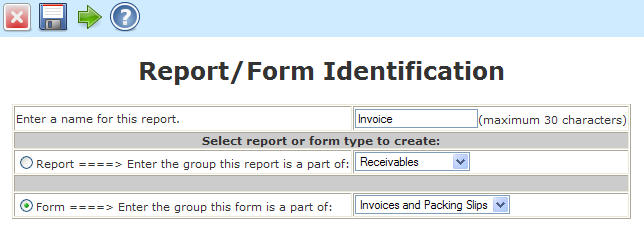
Press Continue when all information has been entered.
IMPORTANT: At this time a record will be added to the forms table and will appear in the list of available forms. Users can choose this form to generate but the result will be a ‘No data in this form ’ warning. The form should be deleted if the report builder process is not completed for a given form.
The next screen allows us to alter some of the default settings for the page layout of the form. Most fields are self explanatory but there are a few notes to remember.
Page layout: Set the settings desired for the page layout. Each displayed entry for the page are handled individually in the field setup form. You may return here to make further changes by editing the form after you finish building the form testing the output.
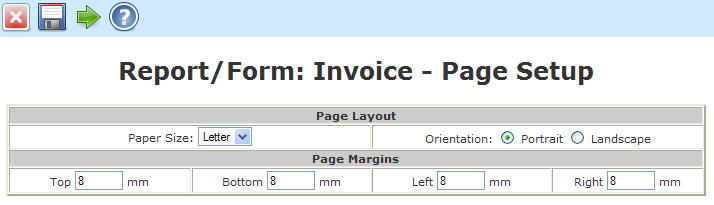
After all information has been entered, press Continue to enter the database information.
This form allows us to specify the tables and linked tables that are used to build the query. These fields generate what will become the second part of the query, “FROM table1 INNER JOIN table2 ON table2linkequation INNER JOIN table3 ON etc”.
NOTE: IMPORTANT: KNOWLEDGE OF THE DATABASE TABLES AND STRUCTURE IS REQUIRED.
Enter the data in the boxes as shown below. Only one row of data may be entered at a time in sequence. After each table/Link Equation row has been entered, press the Update button to validate the table and commit the link equation. The form will reload with data just entered and will then allow the next Table/Link Equation to be entered. The fields are case sensitive.
Text Box Name |
Data to Enter |
| Table Name - Primary | salesorders |
| Table Name - Second | salesorderdetails |
| Link Equation - Second | salesorders.orderno = salesorderdetails.orderno |
| Table Name - Third | debtorsmaster |
| Link Equation - Third | salesorders.debtorno = debtorsmaster.debtorno |
| Table Name - Fourth | custbranch |
| Link Equation - Fourth | salesorders.branchcode = custbranch.branchcode |
NOTE: After the data has been entered, the tool will validate the data by attempting to retrieve a single row from the query. If a single row cannot be accessed from the database, you cannot progress past this point.
NOTE: If you get stuck here, remember that the report exists in the standard reports list and should be deleted to prevent users from running the report.
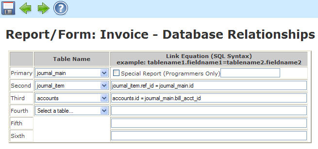
After all information has been entered, press Continue to enter the fields to display.
This form will add the allowed fields used to generate the form output. Fields may be graphic, image, data or static text. At least one field needs to be entered to make a valid form. Up to the total number of fields in the linked databases provided in step 3 are allowed for data fields. In practice, however, a smaller list usually works the best. Each field has it’s own attributes, including placement, font style, size, color and alignment and more depending on the field chosen. More on field types later.
PRACTICAL NOTE: It’s a good idea to pre-order the fields in a logical order in the way you want to the data to appear.
Order: The order determines the sequence of the generation of the field list. If an order number is entered that already exists, it will be inserted into the list in the order specified and the remaining fields will be bumped down one position. If the order number is left out, it will append the new field to the end of the list. Order numbers begin with 1.
NOTE: In forms, the order is not terribly important since each field contains it's own positioning information.
Name to Display: The description can be any English (or other language) description. This is the ID assigned to the fieldname. It will appear on the report heading and links directly to the table.fieldname entry. Special characters are allowed but not recommended.
Show: Identifies the fields to display. Only fields that are checked to show will appear in the form. It is a good practice to show the fields that you want to appear in the standard report but not necessarily all fields. The user can decide what pieces of data they want and alter this field only in custom reports. If no fields are identified to show, the report viewer will generate a warning message ‘No data to display’.
Type: Specifies the type of field. We will go over each type in detail below.
Data lines contain a single piece of information from the database query. A dropdown list of available fields is shown along with the attributes of the text to be displayed.
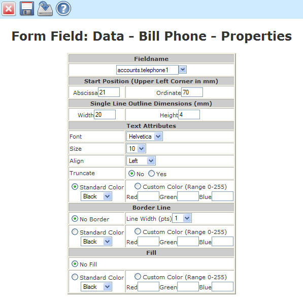
Data Blocks are a special case of data lines that concatenate several fields from the database with a separator value. Data blocks are ideal candidates for addresses where fields need to be near each other but vary in length and how they are separated from each other. The example below is for an en_US address where address3-5 are city, state and postal code, respectively and address 6 is the country. The output will be displayed as follows:
Widgets International (name)
1234 Main Street (address1)
Suite #3 (address2)
Anytown, CA 90019(address3), (address4) (address5)
US (address6)
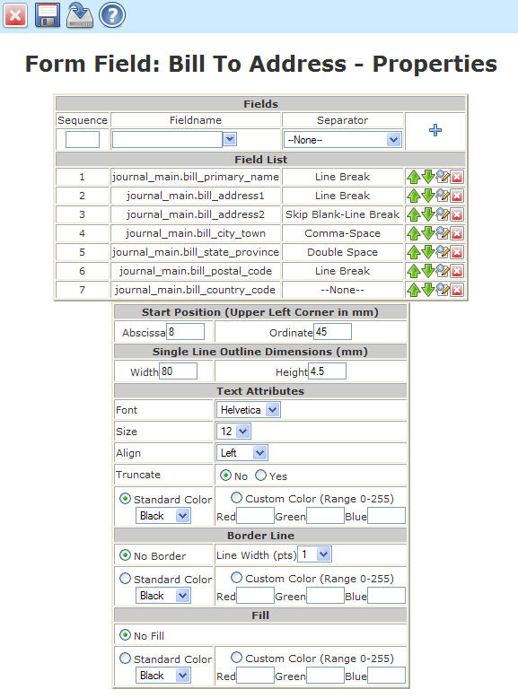
Data Tables are the main part of the form where data lists are displayed. The table has a start position along with width and height information. The border line (if specified) will be drawn around the perimeter of the table as well as between each column of data. The Fill information will separate each line of information with alternating White-Fill Color highlights between every line (similar to line separation in reports). If no fill is specified, the form background will be white. Each data line in the table will make up a single column. Multiple data line cannot appear in the same column (unlike reports where column breaks are allowed). Each data item can have it's own font attributes and can be processed through a text processing option. The total of the column widths of the displayed data (with Show checked) should be equal to the total width of the table for the output to display properly. The Name to Display information will make up the heading of each respective table column and will appear as the heading of the table on every page generated.
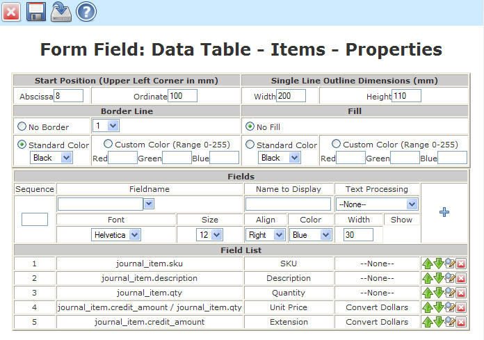
Data Totals take all the fields entered (3 in this example) and pull the total from the database for a given form. If the form is multipage, the words 'Continued' will be displayed on every page except the last where the form totals will be substituted. If the word 'Continued' appear, the user knows that the form is multipage. The page number tracks and displays the current page as the form is being generated.
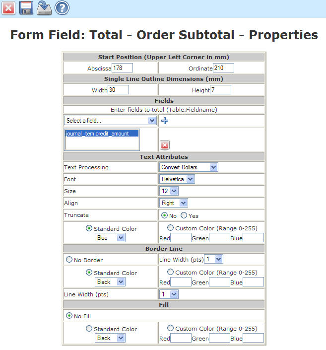
Fixed Text Fields display a single line of text. It should be used for static form information such as labels and messages that are not generated by a database query.
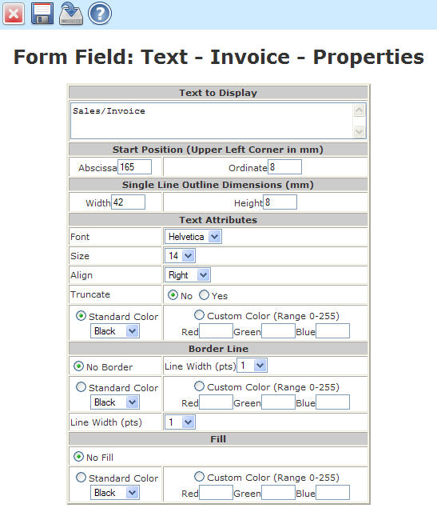
Images of type jpg, jpeg and png are accepted. An image may be selected from the current list of available images or uploaded through the browser. The abscissa and ordinate must be specified. If the width and height are left blank, the image retains it's original size and aspect ratio. If either a width or a height are specified, but not both, the image is sized to fit the specified dimension and the other is autosized to maintain the aspect ratio. If both width and height are specified, the image is size to fit the width and height provided.
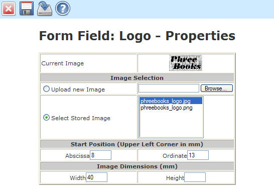
Rectangles may be generated with many attributes. A rectangle without a border could be used to shade an area of the form. A rectangle with a border and no fill can be used to outline a block of information.
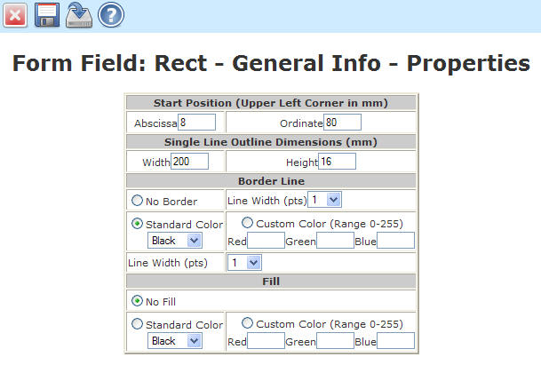
Lines can be drawn vertically, horizontally or diagonally. Colors and line widths are also programmable.
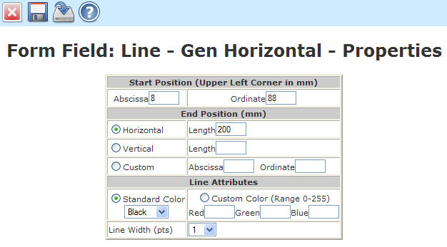
Company Data Lines are similar to Data Lines except the field list is derived from the companies database.
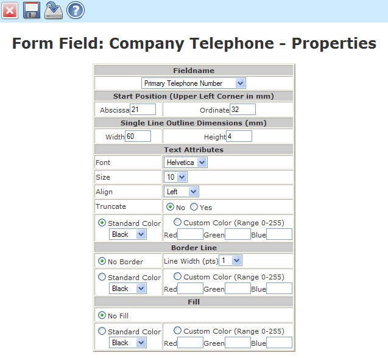
Company Data Blocks are similar to Data Blocks except the field list is derived from the companies database.
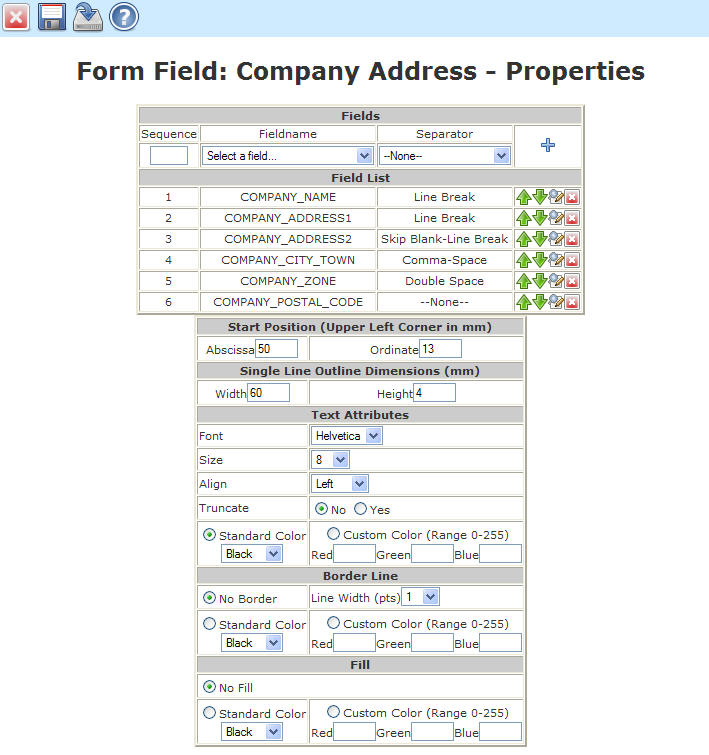
The Page Number field prints only the page number in numeric format (not: Page X of Y). If the wording 'Page ' is necessary, a new Fixed Text Field will be necessary to generate the prefix for the page number.
NOTE: There is a limitation between report builder and FPDF with the page number alias. Report builder will allow multiple forms to be built in a single query. Since multipage forms are possible, the page total based on each form page break cannot be calculated in real time by report builder. FPDF has an alias to track the total number of pages but does so for the entire PDF file. For example, if the user asks to generate all invoices for 'Today', there will probably be more than one. Also, one or more may be multipage. The FPDF alias will provide the total number of pages for the entire form build (all invoices for Today) and not for each invoice form. Report builder only knows what page it is working on and not how many total pages are in each individual invoice. Therefore, only the report builder current page number is generated with this field and the total number of pages of the form is not available. The 'continued' feature for totals indicates that a form is multipage.
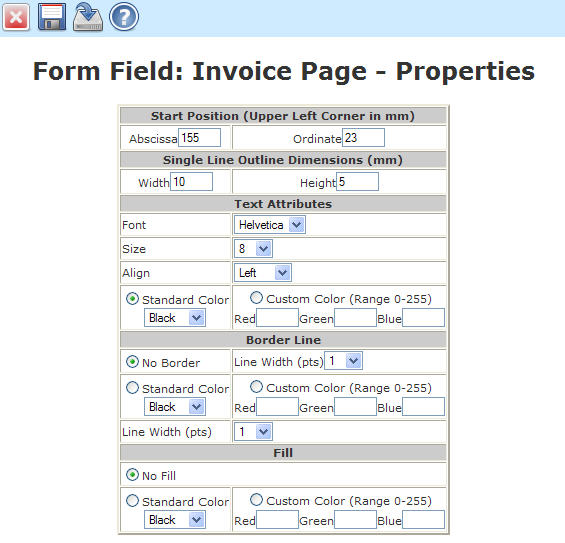
The details of each field are too numerous to reproduce here. The best way to review the fields in our example would be to import the form and examine the fields of interest. If you make an error, the buttons on the right of each row entered allow you to edit, re-sequence, or delete a row. Properties for each field can be edited as well. An abbreviated field list is shown below:
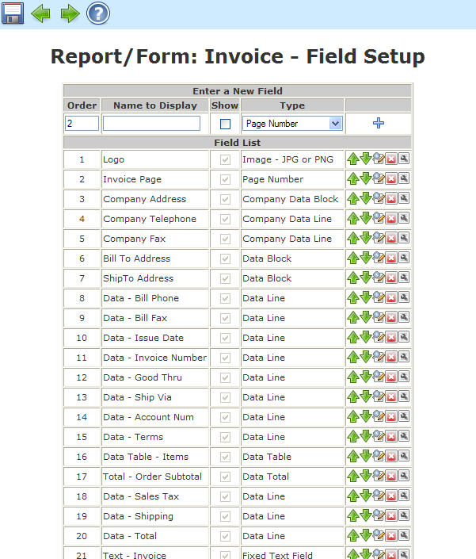
After all information has been entered, press Continue to enter the filter criteria.
This form builds the options for date selection, page break field, and filtering for the form. Here’s how each field works:
Date: If your report has a date field that is displaying, this is where you will specify the type of data choices available. Many are just quick selections to standard periods of time. The two most generic, ALL and RANGE allow the user to quickly view every entry in the database or specify the particular date range they are interested in. For all date selections (except ALL), the table name and fieldname ‘table.fieldname’ must be entered into the Date Fieldname text box or an sql error will result. The fieldname will be tested with the selected tables to validate the input. A default date can be chosen hare as well. For example, If a standard report named Today's Sales is being generated, you may still want to allow the user to select a date range but you want the date to first come up with Today as the default. In this case, you would select as many date choices as you wish but upon entry to the report, Today will be the default.
NOTE: If your report doesn’t have any date fields, or doesn’t depend on date information, either de-select all the check boxes in which case the date options will not be displayed in the report viewer or just check the ALL box to show the date option with only a single choice available.
Form Page Break Field: Form Page Break Fields specify the field that is used to separate forms. For our invoice example, the invoice number would be the logical form break. This will force a new form for every invoice number within the range defined in the criteria and date parameters.
Filter Criteria: The filter criteria allows for user options to further refine their output. There are no limit to the number of options but usually 3-4 work the best. The type of criteria must make sense relative to the field. If the field is a text field, the all:range criteria work best. For yes/no fields, the all:yes:no, printed:unprinted, etc work the best.
The form should look something like this:
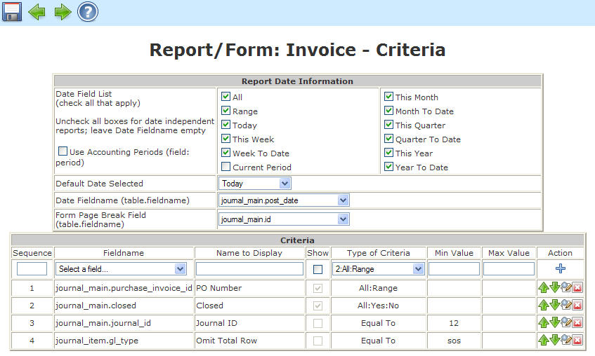
This form builds the allowed list for security. Here’s how each field works:
Users: Check the box to allow all user to access this form, or, select from your current user list. Zero or more selections are possible.
Employees: Check the box to allow all employees to access this form, or, select from your current employee list. Zero or more selections are possible.
Departments: Check the box to allow all departments to access this form, or, select from your current department list. Zero or more selections are possible.
NOTE: If any user, employee, or department is excluded, the report will not appear in the Tools->Reports listings.
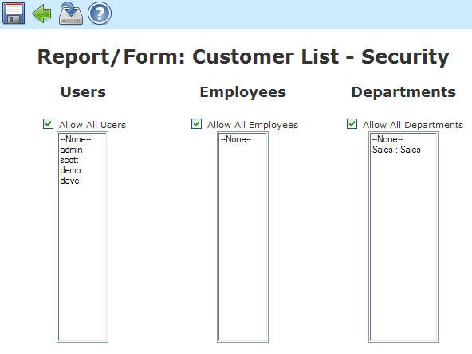
That’s it, click on Finish to exit the report builder and we’re ready to see our result.